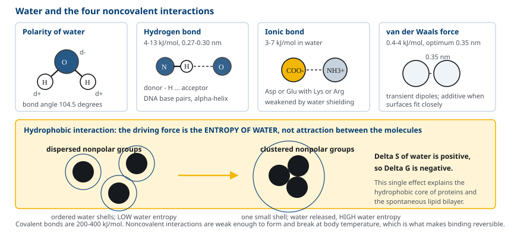
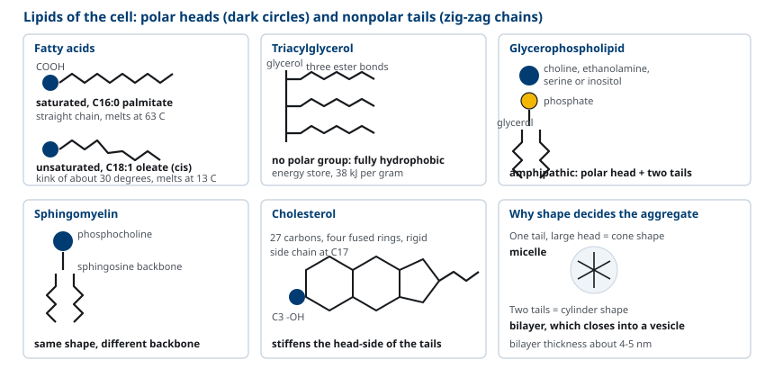
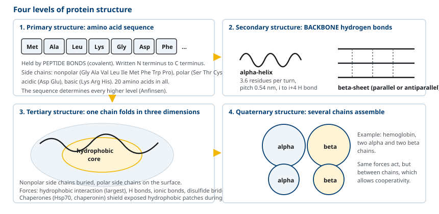
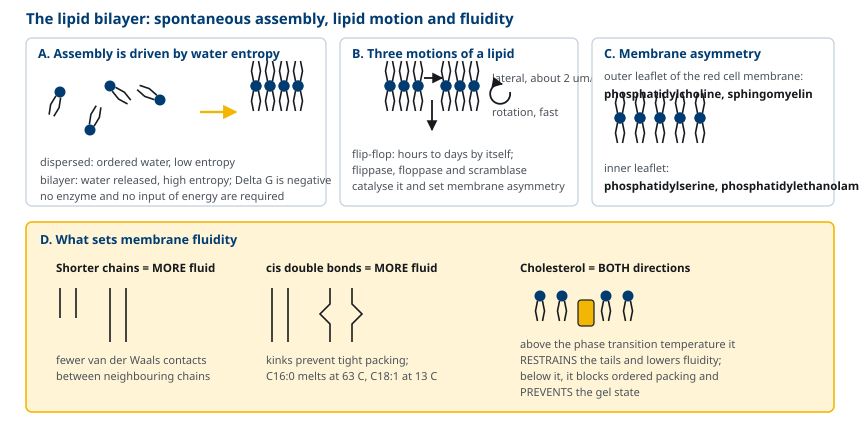
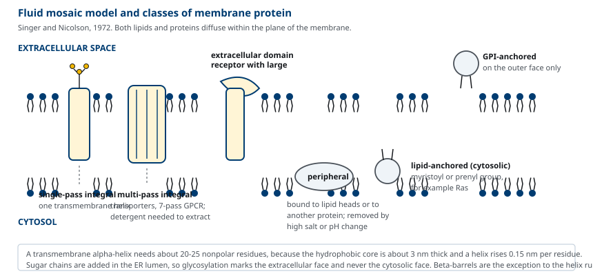
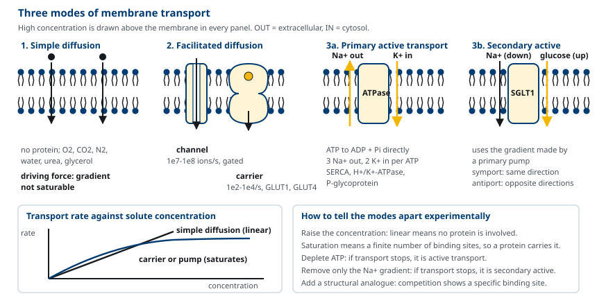

M01-W05-L02 · 인체일반생물학과 기초세포생물학
생체분자와 막의 구조
Biological Molecules and the Structure of Membranes
학습목표
- 물의 성질과 네 가지 비공유 상호작용이 생체분자 구조를 결정하는 방식을 설명한다.
- Carbohydrate, lipid, nucleic acid, protein의 기본 단위와 결합 방식을 비교한다.
- 단백질의 1차에서 4차 구조까지를 구분하고 folding을 결정하는 힘을 설명한다.
- 지질 이중층이 외부 에너지 없이 자발적으로 형성되는 열역학적 이유를 설명한다.
- 막의 유동 모자이크 모형을 설명하고 유동성을 결정하는 요인을 지질 조성으로 예측한다.
- 막단백질을 지질 이중층과의 관계에 따라 분류하고 막관통 분절을 서열에서 예측한다.
- 단순확산, 촉진확산, 능동수송을 구동력과 운반체 유무로 구분하고 수송 곡선을 해석한다.
선수지식
- M01-W05-L01 세포의 기원·진화와 세포 연구 방법 — 모든 세포가 지질 이중층 막으로 둘러싸여 있다는 사실
- 고등학교 수준의 화학 — 공유결합, 극성, 화학평형
강의 구성
- 1. 물과 네 가지 비공유 상호작용
- 2. 거대분자의 공통 설계
- 3. Carbohydrate의 구조
- 4. Lipid의 구조
- 5. Nucleic acid의 구조
- 6. Protein의 구조와 folding
- 7. 지질 이중층의 자발적 형성과 막의 유동성
- 8. 유동 모자이크 모형과 막단백질
- 9. 막의 비대칭과 지질의 다양성
- 10. 삼투와 세포 부피의 조절
- 11. 막을 통한 수송: 단순확산, 촉진확산, 능동수송
- 12. 세포 표면의 당 — glycocalyx
- 13. 이 수업이 이어지는 곳
1. 물과 네 가지 비공유 상호작용
세포는 무게의 약 70%가 물이다. 생체분자의 구조와 반응은 물속에서 일어나므로 물의 성질을 먼저 본다.
물 분자는 산소 하나와 수소 둘이 104.5°로 굽은 구조다. 산소가 전자를 더 세게 당기므로 산소 쪽은 부분 음전하, 수소 쪽은 부분 양전하를 띤다. 이 극성 때문에 물 분자는 서로 수소결합을 이루고, 극성 분자나 이온을 둘러싸 녹인다. 반대로 비극성 분자는 녹이지 못한다.
생체분자의 입체 구조를 실제로 유지하는 것은 공유결합이 아니라 네 가지 비공유 상호작용이다. 공유결합은 200~400 kJ/mol로 강해서 쉽게 끊어지지 않지만, 비공유 상호작용은 하나하나가 약해서 체온에서 만들어지고 끊어질 수 있다. 결합이 약한 것이 결함이 아니라 조건이다. 단백질이 기질과 결합하고 놓아주고, DNA 두 사슬이 복제를 위해 풀렸다가 다시 붙는 일이 모두 이 가역성에 의존한다.
| 상호작용 | 세기(물속, 대략) | 작용 거리 | 보기 |
|---|---|---|---|
| 이온결합 | 3~7 kJ/mol | 중간 | 효소 활성 부위의 Asp⁻와 Lys⁺ |
| 수소결합 | 4~13 kJ/mol | 0.27~0.30 nm | DNA 염기쌍, α-helix의 뼈대 |
| van der Waals 힘 | 0.4~4 kJ/mol | 0.35 nm 부근 | 단백질 내부의 치밀한 충전 |
| 소수성 상호작용 | — (엔트로피 효과) | 짧음 | 단백질 내부 core, 지질 이중층 |
소수성 상호작용은 다른 셋과 성질이 다르다. 비극성 분자 사이에 특별한 인력이 있는 것이 아니다. 비극성 분자가 물속에 있으면 주변 물 분자가 수소결합 방향을 제한받아 질서 있게 배열되고, 그만큼 물의 엔트로피가 줄어든다. 비극성 분자들이 서로 뭉치면 물과 닿는 표면이 줄어 물의 엔트로피가 회복된다. 즉 소수성 상호작용의 구동력은 분자 사이의 인력이 아니라 물의 엔트로피 증가다. 이 사실이 뒤에서 지질 이중층의 자발적 형성을 설명한다.

2. 거대분자의 공통 설계
네 가지 생체분자를 따로 외우기 전에, 넷이 공유하는 설계를 먼저 본다. 공통점이 많아 외울 양이 크게 줄어든다.
중합체와 단량체. 탄수화물, 핵산, 단백질은 모두 작은 단위가 반복해 이어진 중합체다. 지질만 예외인데, 지질은 공유결합 중합체가 아니라 소수성 상호작용으로 모인 집합체다. 이 차이가 지질을 다른 셋과 다르게 다루어야 하는 이유다.
| 거대분자 | 단량체 | 결합 | 결합이 만들어지는 방식 |
|---|---|---|---|
| 탄수화물 | 단당류 | glycosidic 결합 | 축합(물이 빠진다) |
| 핵산 | nucleotide | phosphodiester 결합 | 축합 |
| 단백질 | 아미노산 | peptide 결합 | 축합 |
| 지질 | (중합체 아님) | 소수성 상호작용 | 자발적 회합 |
축합과 가수분해. 단량체를 이을 때 물 한 분자가 빠지고(축합), 끊을 때 물 한 분자가 더해진다(가수분해). 소화가 전부 가수분해인 이유이며(M01-W01-L03), 합성에는 에너지가 필요한 이유이기도 하다. 축합은 열역학적으로 불리하므로 활성화된 전구체를 써야 한다. 핵산 합성에 nucleoside 삼인산을, 단백질 합성에 아미노산이 실린 tRNA를 쓰는 것이 그런 장치다.
적은 종류로 많은 것을 만든다. 단백질은 20종의 아미노산, 핵산은 4종의 nucleotide만 쓴다. 종류를 늘리는 대신 순서를 바꾸어 다양성을 얻는 설계다. 길이 100인 사슬이라도 20의 100제곱 가지가 가능하므로 종류의 부족이 문제가 되지 않는다. 대신 순서를 정확히 복제하고 읽는 장치가 필수가 되며, 그것이 유전정보 체계 전체의 존재 이유다(M01-W05-L03).
방향성이 있다. 중합체의 두 끝이 화학적으로 다르다. 핵산은 5′와 3′ 끝이, 단백질은 아미노 말단과 카복실 말단이 다르다. 합성은 정해진 방향으로만 일어나고, 서열을 적을 때도 관례가 정해져 있다. 방향성이 없다면 같은 서열이 두 가지로 읽혀 정보가 모호해진다.
3. Carbohydrate의 구조
Carbohydrate는 (CH₂O)ₙ의 실험식을 갖는 분자군으로, 에너지원과 구조 재료, 그리고 세포 표면의 인식 표지로 쓰인다.
단당(monosaccharide)은 탄소 수로 나뉜다. 탄소 5개는 pentose(ribose, deoxyribose), 6개는 hexose(glucose, fructose, galactose, mannose)다. Glucose는 수용액에서 고리 형태로 존재하며, C1의 hydroxyl기가 고리면 아래를 향하면 α형, 위를 향하면 β형이다. 이 작은 차이가 큰 결과를 낳는다.
이당과 다당은 단당이 glycosidic 결합으로 이어진 것이다. 결합의 종류를 번호로 표시한다.
| 분자 | 구성 | 결합 | 기능 |
|---|---|---|---|
| Lactose | galactose + glucose | β(1→4) | 젖의 당 |
| Sucrose | glucose + fructose | α(1→2) | 식물의 수송 당 |
| Maltose | glucose ×2 | α(1→4) | 전분 분해 산물 |
| Starch(amylose) | glucose 중합체 | α(1→4) | 식물의 저장 |
| Glycogen | glucose 중합체 | α(1→4), 분지 α(1→6) | 동물의 저장 |
| Cellulose | glucose 중합체 | β(1→4) | 식물 세포벽 구조 |
Glycogen과 cellulose는 똑같이 glucose만으로 이루어졌지만 결합 입체 구조가 달라 성질이 반대다. α(1→4) 사슬은 나선형으로 감겨 치밀한 알갱이가 되고 사람의 amylase가 분해한다. β(1→4) 사슬은 곧게 펴져 사슬끼리 수소결합으로 묶여 섬유가 되고, 사람에게는 이 결합을 끊는 효소가 없어 소화되지 않는다. 약 8개 분지점마다 끝이 늘어나는 glycogen의 구조는 분해 효소가 동시에 작용할 수 있는 말단을 많이 만들어, 필요할 때 빠르게 glucose를 내놓게 한다.
세포 표면에서 carbohydrate는 정보를 담는다. 단백질에 결합한 oligosaccharide(glycoprotein)와 지질에 결합한 것(glycolipid)은 세포 밖을 향해 있어 세포 인식, 접착, 면역 반응의 표지가 된다. ABO 혈액형은 적혈구 표면 당사슬의 말단 당 한 개 차이로 정해진다.
4. Lipid의 구조
Lipid는 화학 구조가 아니라 물에 잘 녹지 않는다는 성질로 묶인 분자군이다. 역할은 세 가지다. 에너지 저장, 막 구성, 신호 전달이다.
지방산(fatty acid)은 한쪽 끝에 carboxyl기가 있는 긴 탄화수소 사슬이다. 사람 조직에서는 탄소 수 16(palmitate), 18(stearate, oleate)이 흔하다. 이중결합이 없으면 포화(saturated), 있으면 불포화(unsaturated)다. 이중결합은 생체에서 거의 모두 cis형이고, cis 이중결합은 사슬에 약 30°의 꺾임을 만들어 사슬끼리 치밀하게 쌓이지 못하게 한다. 그래서 불포화 지방산이 많으면 녹는 온도가 낮다. Palmitate(C16:0)는 63°C에서 녹고 oleate(C18:1)는 13°C에서 녹는다.
Triacylglycerol은 glycerol의 hydroxyl기 세 개에 지방산 세 개가 ester 결합한 분자다. 극성 부분이 전혀 없어 물과 완전히 섞이지 않으며, 세포 안에서 수분을 끌지 않는 lipid droplet로 저장된다. 탄화수소가 환원된 상태라 산화할 때 나오는 에너지가 크다. 지방 1 g이 약 38 kJ(9 kcal), carbohydrate와 단백질은 약 17 kJ(4 kcal)를 낸다.
Phospholipid가 막의 주성분이다. 가장 흔한 glycerophospholipid는 glycerol 뼈대의 C1·C2에 지방산 두 개, C3에 인산을 통해 극성 머리(choline, ethanolamine, serine, inositol)가 붙은 구조다. 한 분자 안에 물과 친한 머리와 물을 피하는 꼬리가 함께 있으므로 amphipathic이다. Sphingomyelin은 glycerol 대신 sphingosine을 뼈대로 쓰지만 전체 형태는 같다.
Cholesterol은 탄소 27개의 steroid로, 네 개의 고리와 C3의 hydroxyl기, C17의 side chain으로 이루어진다. 단단한 고리 구조가 인지질 꼬리 사이에 끼어들어 막의 성질을 바꾼다.

5. Nucleic acid의 구조
Nucleic acid의 단위는 nucleotide이고 세 부분으로 이루어진다. 5탄당(ribose 또는 deoxyribose), 염기, 인산이다. 염기는 두 고리의 purine(adenine, guanine)과 한 고리의 pyrimidine(cytosine, thymine, uracil)으로 나뉜다. DNA는 deoxyribose와 thymine을, RNA는 ribose와 uracil을 쓴다.
Nucleotide는 한 당의 C3 hydroxyl기와 다음 nucleotide의 C5 인산 사이에 phosphodiester 결합을 이루어 사슬이 된다. 그래서 사슬에는 방향이 있다. 한쪽 끝은 인산이 남은 5′ 말단, 다른 쪽은 hydroxyl기가 남은 3′ 말단이다. 모든 핵산 합성 효소는 5′→3′ 방향으로만 사슬을 늘린다.
DNA는 두 사슬이 서로 반대 방향으로 놓여 이중나선을 이룬다. 두 사슬을 붙드는 힘은 두 가지다. 염기쌍 사이의 수소결합(A=T 두 개, G≡C 세 개)과, 염기들이 나선 내부에 쌓이면서 생기는 base stacking이다. 당과 인산은 물과 닿는 바깥쪽에, 염기는 안쪽에 놓인다. 이 배치는 소수성 상호작용의 결과다. G≡C 쌍이 수소결합 하나를 더 가지므로, GC 함량이 높은 DNA는 두 사슬을 떼어내는 온도(melting temperature)가 높다.
RNA는 보통 한 사슬이지만 자기 안에서 상보적인 부위끼리 짝지어 hairpin, loop 같은 구조를 만든다. 이 구조가 tRNA와 rRNA의 기능, 그리고 ribozyme의 촉매 활성을 만든다. RNA는 ribose의 C2에 hydroxyl기가 더 있어 염기 조건에서 가수분해되기 쉽고, 그래서 DNA보다 불안정하다.
6. Protein의 구조와 folding
단백질은 세포에서 가장 다양한 일을 하는 분자다. 촉매(효소), 구조(collagen), 수송(hemoglobin, 막수송체), 운동(myosin), 신호 전달(수용체, kinase), 방어(항체)가 모두 단백질이다.
단위는 아미노산 20종이다. 공통 뼈대(α-탄소에 amino기, carboxyl기, 수소)에 서로 다른 side chain이 붙어 있고, 이 side chain의 성질이 단백질의 성질을 정한다.
- 비극성: Gly, Ala, Val, Leu, Ile, Met, Phe, Trp, Pro — 단백질 내부 core를 이룬다
- 극성 비전하: Ser, Thr, Cys, Tyr, Asn, Gln — 수소결합에 참여한다
- 산성(음전하): Asp, Glu — 금속 결합과 촉매에 쓰인다
- 염기성(양전하): Lys, Arg, His — 인산과 DNA에 결합한다
아미노산은 peptide 결합으로 이어진다. 구조는 네 수준으로 나눈다.
| 수준 | 내용 | 유지하는 힘 |
|---|---|---|
| 1차 구조 | 아미노산 서열 | peptide 공유결합 |
| 2차 구조 | α-helix, β-sheet, loop | 뼈대의 수소결합 |
| 3차 구조 | 한 사슬 전체의 3차원 접힘 | 소수성 상호작용, 수소결합, 이온결합, disulfide 결합 |
| 4차 구조 | 여러 사슬의 조립 | 3차 구조와 같은 힘, 사슬 사이에서 작용 |
α-helix는 한 회전에 아미노산 3.6개, 피치 0.54 nm이고, i번째 아미노산의 carbonyl 산소와 i+4번째의 amide 수소가 수소결합한다. β-sheet는 펴진 사슬들이 나란히(parallel) 또는 반대 방향(antiparallel)으로 놓여 사슬 사이에 수소결합을 이룬다. 두 2차 구조 모두 side chain이 아니라 뼈대의 수소결합으로 유지되므로 서열과 무관하게 같은 기하 구조를 갖는다.
3차 구조를 결정하는 가장 큰 힘은 소수성 상호작용이다. 비극성 side chain이 분자 내부로 묻히고 극성 side chain이 표면으로 나오는 배치가 물의 엔트로피를 최대로 한다. Christian Anfinsen은 ribonuclease를 변성시킨 뒤 변성제를 제거하면 활성이 되돌아오는 것을 보여, 1차 구조가 3차 구조를 결정한다는 결론을 얻었다. 다만 세포 안에서는 접히는 도중의 사슬이 서로 엉키기 쉬우므로, chaperone(Hsp70, chaperonin)이 노출된 소수성 부위를 가려 잘못된 응집을 막는다.

7. 지질 이중층의 자발적 형성과 막의 유동성
Amphipathic 지질을 물에 넣으면 저절로 이중층이 생긴다. 이 현상의 구동력은 앞 절의 소수성 효과다. 지질이 흩어져 있으면 각 꼬리 주변의 물이 질서를 강제받아 엔트로피가 낮다. 꼬리끼리 모여 물과 접촉하지 않게 되면 그 물이 자유로워져 전체 엔트로피가 커진다. 즉 ΔS가 양수여서 ΔG가 음수가 되는 자발적 과정이다. 외부 에너지도, 효소도 필요하지 않다.
모이는 방식은 분자의 모양이 정한다. 머리가 크고 꼬리가 하나인 분자(세제, 리소인지질)는 꼬리가 중심을 향한 공 모양 micelle을 만든다. 머리에 대해 꼬리가 둘인 인지질은 원통 모양이라 micelle로는 공간이 맞지 않아 이중층을 만들고, 이중층의 가장자리에서 꼬리가 물에 노출되는 것을 피하기 위해 가장자리가 닫혀 소포(vesicle) 또는 평판 구조가 된다. 이것이 막이 끊어지면 저절로 다시 붙는 이유다.
이중층은 두께가 약 4~5 nm이고, 이온과 극성 분자에게 거의 통과 불가능한 장벽이다. 반면 지질 분자 자체는 막 안에서 끊임없이 움직인다. 세 가지 운동을 구분한다.
- 측방 확산(lateral diffusion): 같은 층 안에서 옆으로 이동한다. 1초에 약 2 μm를 움직여 빠르다.
- 회전(rotation): 분자 축을 중심으로 돈다. 빠르다.
- 층간 이동(flip-flop): 한 층에서 다른 층으로 넘어간다. 극성 머리가 소수성 내부를 지나야 하므로 저절로는 몇 시간에서 며칠이 걸린다. 생체에서는 flippase, floppase, scramblase가 ATP를 쓰거나 Ca²⁺ 신호에 반응해 이 이동을 매개한다.
Flip-flop이 느린 덕분에 두 층의 지질 조성이 서로 다르게 유지된다(membrane asymmetry). 적혈구 막에서 phosphatidylcholine과 sphingomyelin은 주로 바깥층에, phosphatidylserine과 phosphatidylethanolamine은 주로 안쪽 층에 있다.
유동성(fluidity)은 지질이 얼마나 자유롭게 움직이는지를 말한다. 온도를 낮추면 어느 지점에서 막이 유동 상태에서 질서 있는 겔 상태로 바뀌는데, 그 온도를 phase transition temperature라고 한다. 유동성을 결정하는 요인은 세 가지다.
| 요인 | 유동성을 높이는 방향 | 이유 |
|---|---|---|
| 지방산 사슬 길이 | 짧을수록 유동적 | 사슬 사이 van der Waals 접촉이 줄어든다 |
| 이중결합(cis) | 많을수록 유동적 | 꺾임이 치밀한 쌓임을 막는다 |
| Cholesterol | 온도에 따라 양방향 | 아래 설명 참조 |
Cholesterol의 작용이 한 방향이 아니라는 점이 중요하다. 단단한 steroid 고리가 인지질 꼬리의 머리 쪽 부분과 맞닿아 그 부분의 움직임을 제한하므로, phase transition temperature보다 높은 온도에서는 유동성을 낮춘다. 동시에 cholesterol은 인지질 사이에 끼어들어 사슬이 규칙적으로 정렬되는 것을 방해하므로, 낮은 온도에서는 겔 상태로의 전환을 막아 유동성을 유지한다. 결과적으로 cholesterol은 온도 변화에 대한 막의 완충 장치로 작동하며, 동시에 작은 분자의 투과도를 낮춘다.

8. 유동 모자이크 모형과 막단백질
1972년 Singer와 Nicolson은 유동 모자이크 모형(fluid mosaic model)을 제시했다. 막은 유동적인 지질 이중층에 단백질이 모자이크처럼 박혀 있고, 지질과 단백질이 모두 막 평면 안에서 움직일 수 있다는 것이다.
실험적 근거가 뚜렷하다. Freeze-fracture 전자 현미경으로 막을 두 층 사이에서 쪼개면 지질 표면에 단백질 입자가 박힌 상이 보인다. 서로 다른 형광 항체로 표지한 두 종류의 세포를 융합시키면(Frye와 Edidin의 실험) 처음에는 두 표지가 각각의 반구에 있다가 37°C에서 40분 안에 섞인다. 즉 막단백질이 평면 안에서 확산한다.
다만 모든 막단백질이 자유롭게 움직이는 것은 아니다. 세포골격에 묶이거나(적혈구의 band 3와 spectrin), tight junction에 막혀, 또는 cholesterol과 sphingolipid가 많은 미세 영역에 모여 움직임이 제한된다. 상피세포의 막은 tight junction을 경계로 apical면과 basolateral면의 단백질 조성이 완전히 다르게 유지되며, 이 분리가 방향성 있는 수송의 전제다.
막단백질은 이중층과의 관계로 분류한다.
- Integral(막관통) 단백질: 소수성 분절이 이중층을 관통한다. 한 번 관통하는 것(single-pass; glycophorin, 성장인자 수용체)과 여러 번 관통하는 것(multi-pass; 수송체, G protein-coupled receptor는 7회)이 있다. 분리하려면 세제로 이중층을 허물어야 한다.
- Peripheral 단백질: 이중층에 들어가지 않고 막 표면의 단백질이나 지질 머리에 결합한다. 높은 염 농도나 pH 변화로 떼어낼 수 있다.
- Lipid-anchored 단백질: 공유결합한 지질로 막에 붙는다. 세포질 쪽에서는 지방산(myristoyl)이나 prenyl기(Ras)로, 세포 밖에서는 glycosylphosphatidylinositol(GPI) anchor로 고정된다.
막관통 분절은 보통 20~25개의 비극성 아미노산으로 이루어진 α-helix다. 지질 이중층의 소수성 두께 약 3 nm를 α-helix의 피치 0.15 nm/아미노산으로 나누면 약 20개가 필요하다. 그래서 아미노산 서열에서 비극성 아미노산이 20개 이상 연속하는 구간(hydropathy plot의 봉우리)을 찾으면 막관통 분절을 예측할 수 있다. 예외로 β-barrel 구조가 막을 관통하는 경우가 있는데, 세균 외막의 porin과 미토콘드리아 외막의 통로가 그렇다.
막단백질에는 방향성이 있다. 당사슬은 거의 언제나 세포 밖(또는 소기관 내강) 쪽에 붙고, 세포질 쪽으로는 붙지 않는다. 당 사슬 부착 효소가 소포체 내강에 있기 때문이다. 이 방향성은 막단백질이 합성될 때 정해지고 이후 바뀌지 않는다.

9. 막의 비대칭과 지질의 다양성
7절과 8절에서 막을 하나의 유동적인 판으로 다루었다. 실제 막은 그보다 훨씬 구조화되어 있으며, 두 가지 사실을 더해야 한다.
두 층의 조성이 다르다. 지질 이중층의 안쪽 층과 바깥쪽 층은 서로 다른 지질로 이루어진다. 사람 적혈구 막에서 phosphatidylcholine과 sphingomyelin은 주로 바깥층에, phosphatidylserine과 phosphatidylethanolamine은 주로 안쪽 층에 있다.
비대칭은 유지되는 상태다. 지질의 자발적인 층간 이동은 매우 느리므로, 처음 만들어질 때 생긴 배치가 그대로 유지될 것 같지만 그렇지 않다. 세 종류의 효소가 능동적으로 배치를 관리한다.
- Flippase: ATP를 써서 특정 지질을 바깥층에서 안쪽 층으로 옮긴다. 비대칭을 만들고 유지한다.
- Floppase: 반대 방향으로 옮긴다.
- Scramblase: ATP 없이 양방향으로 섞는다. Ca²⁺ 농도가 오르면 활성화된다.
비대칭이 무너지는 것이 신호가 된다. 평소 안쪽에만 있던 phosphatidylserine이 바깥으로 드러나면 그것이 특정한 신호로 읽힌다. 두 가지 맥락에서 중요하다.
- 세포 사멸: 사멸하는 세포가 phosphatidylserine을 바깥에 노출시키고, 대식세포가 이를 인식해 삼킨다. 세포가 터져 내용물을 쏟기 전에 조용히 제거되게 하는 표지이며, 염증을 일으키지 않는 이유가 여기에 있다(M01-W12-L02).
- 혈액 응고: 활성화된 혈소판이 phosphatidylserine을 노출시키고, 그 음전하 표면에서 응고 인자 복합체가 조립된다. 응고 반응이 필요한 자리에서만 일어나게 하는 장치다.
지질의 종류가 많은 이유. 막을 만드는 데 지질 한 종류면 충분할 것 같지만 실제로는 수백 종이 쓰인다. 종류마다 머리 부분의 전하와 크기, 꼬리의 길이와 불포화도가 달라 막의 두께, 곡률, 유동성, 그리고 결합하는 단백질이 달라진다. 소기관마다 지질 조성이 다른 것도 이 때문이며, 조성이 그 막의 성질과 기능을 정한다.
인지질은 신호 분자의 저장고이기도 하다. 막의 phosphatidylinositol이 인산화되어 만들어지는 유도체들이 단백질을 특정 막으로 불러들이는 표지로 쓰이고, 효소에 의해 잘리면 2차 전령이 된다. 막이 경계일 뿐 아니라 정보가 저장된 표면이라는 관점이며, 상세는 M01-W11-L02에서 다룬다.
지질이 균일하게 섞여 있지도 않다. Cholesterol과 sphingolipid가 많은 구역이 주변보다 조금 더 질서 있고 두꺼운 상태로 존재한다는 관찰이 있고, 이를 지질 뗏목이라 부른다. 특정 단백질이 이 구역에 모여 신호 전달의 발판이 된다는 모형이 제안되었다.
10. 삼투와 세포 부피의 조절
막이 물은 통과시키고 용질은 선택적으로 통과시킨다는 사실에서 삼투가 따라 나온다. 이 절의 내용은 임상에서 가장 자주 쓰이는 막 생리다.
삼투압과 삼투질 농도. 물은 용질 농도가 낮은 쪽에서 높은 쪽으로 이동한다. 용질 입자의 수가 중요하고 종류는 무관하다. NaCl 1 mol은 Na⁺와 Cl⁻로 나뉘므로 포도당 1 mol의 두 배에 해당하는 삼투 효과를 낸다.
삼투질 농도와 긴장도는 다르다. 이 구분이 임상에서 결정적이다.
- 삼투질 농도(osmolarity): 용액에 녹아 있는 입자의 총 농도. 막을 통과하는 용질도 포함한다.
- 긴장도(tonicity): 세포의 부피를 실제로 바꾸는 능력. 막을 통과하지 못하는 용질만 계산에 넣는다.
차이가 중요한 이유는 간단하다. 막을 자유롭게 통과하는 용질은 결국 양쪽 농도가 같아지므로 물을 끌어당기는 힘을 유지하지 못한다. Urea 용액이 대표적이다. 혈장과 같은 삼투질 농도의 urea 용액은 등장성처럼 보이지만, urea가 세포 안으로 들어가면 안쪽 농도가 올라가 물이 따라 들어오고 세포가 부푼다. 삼투질 농도는 같은데 저장성인 것이다.
| 용액 | 삼투질 농도 | 긴장도 | 세포의 부피 변화 |
|---|---|---|---|
| 0.9% NaCl | 혈장과 같다 | 등장성 | 변화 없다 |
| 5% 포도당 | 혈장과 같다 | 저장성 | 포도당이 대사되면 물만 남아 부푼다 |
| Urea 등삼투 용액 | 혈장과 같다 | 저장성 | 들어와 물을 끌어들여 부푼다 |
| 3% NaCl | 높다 | 고장성 | 쪼그라든다 |
M01-W02-L01에서 본 수액 선택의 논리가 여기서 나온다. 생리식염수는 Na⁺가 세포 밖에 남아 세포외액만 늘리고, 포도당액은 대사 후 순수한 물이 되어 모든 구획에 퍼진다.
물은 어떻게 막을 지나는가. 물 분자는 작고 극성이지만 지질 이중층을 조금씩 통과한다. 그러나 신장의 집합관처럼 대량의 물을 빠르게 옮겨야 하는 곳에서는 이것으로 부족하다. Aquaporin이라는 전용 통로가 물만 선택적으로 통과시킨다.
Aquaporin이 물은 통과시키면서 H⁺는 막는 방식이 설계의 묘미다. 통로 가운데의 아미노산 배치가 물 분자를 한 줄로 세우면서 중간에서 방향을 뒤집게 만드는데, 이 때문에 물 분자들이 사슬처럼 이어져 양성자를 전달하는 경로가 끊어진다. 물만 통과시키려면 양성자를 막아야 하고, 양성자를 막으려면 물의 사슬을 끊어야 한다는 요구가 구조로 해결된 것이다.
세포는 부피를 능동적으로 지킨다. 세포 안에는 빠져나가지 못하는 단백질과 유기 음이온이 많아 삼투압이 높다. 가만히 두면 물이 계속 들어와 터진다. 이를 막는 것이 Na⁺/K⁺-ATPase다. Na⁺를 끊임없이 퍼내 세포 밖의 유효 삼투 입자를 유지함으로써 세포 안쪽으로 끌리는 힘을 상쇄한다. 에너지 공급이 끊기면 펌프가 멈추고 Na⁺와 물이 들어와 세포가 부푸는데, 이것이 허혈 손상 초기의 세포 부종이다.
부피가 바뀌면 세포가 반응한다. 부풀면 K⁺와 Cl⁻를 내보내 물을 따라 내보내고, 쪼그라들면 Na⁺와 아미노산, 그리고 삼투 보조 용질을 들여온다. 뇌세포가 만성 저나트륨혈증에 적응하는 것이 이 기전이며, 적응한 상태에서 혈장 Na⁺를 급히 올리면 세포가 급격히 쪼그라들어 손상된다. M01-W02-L01에서 교정 속도를 제한하는 이유가 여기에 있다.
11. 막을 통한 수송: 단순확산, 촉진확산, 능동수송
지질 이중층은 선택적 장벽이다. 작고 비극성인 분자(O₂, CO₂, N₂)와 작은 비전하 극성 분자(물, 요소, glycerol)는 어느 정도 그냥 통과하지만, 이온과 당, 아미노산, nucleotide는 사실상 통과하지 못한다. 전하를 띤 입자가 소수성 내부로 들어가려면 수화된 물 껍질을 벗어야 하고 그 비용이 너무 크기 때문이다.
세 가지 수송 방식을 구분한다. 구분 기준은 구동력이 무엇인가와 운반 단백질이 필요한가다.
| 구분 | 운반체 | 구동력 | 농도기울기 방향 | 포화 | 특이성 |
|---|---|---|---|---|---|
| 단순확산 | 없음 | 농도·전기 기울기 | 아래로 | 없음(직선) | 없음 |
| 촉진확산 | channel 또는 carrier | 농도·전기 기울기 | 아래로 | 있음(포화 곡선) | 있음 |
| 능동수송 | pump 또는 공동수송체 | ATP 또는 다른 기울기 | 위로 가능 | 있음 | 있음 |
단순확산의 속도는 농도 차이에 비례해 직선으로 늘고 포화하지 않는다. 지질 용해도가 높을수록 빠르므로 작고 지방에 잘 녹는 분자가 유리하다.
촉진확산은 단백질이 매개하지만 에너지를 쓰지 않으므로 방향은 기울기가 정한다. 운반 단백질 수가 유한하므로 농도를 올리면 속도가 최대값에 수렴한다. 두 종류가 있다.
- Channel: 친수성 구멍을 만들어 특정 이온이나 물이 통과하게 한다. 속도가 매우 빠르고(10⁷~10⁸ 이온/초), 전압이나 리간드에 따라 열리고 닫힌다. Aquaporin, Na⁺ channel, K⁺ channel이 그 예다.
- Carrier: 기질과 결합한 뒤 구조를 바꾸어 반대쪽으로 내놓는다. 구조 변화가 필요하므로 channel보다 느리다(10²~10⁴/초). 적혈구와 뇌의 GLUT1, 근육·지방의 GLUT4가 그 예다.
능동수송은 기울기를 거슬러 물질을 옮기므로 에너지를 투입한다. 두 방식이 있다.
- 1차 능동수송: ATP를 직접 가수분해한다. Na⁺/K⁺-ATPase는 ATP 한 분자당 Na⁺ 3개를 밖으로, K⁺ 2개를 안으로 옮긴다. 전하가 맞지 않으므로 전기적 기울기를 만든다. 사람 안정 대사의 상당 부분이 이 펌프에 쓰인다. 다른 예로 소포체의 Ca²⁺-ATPase(SERCA), 위의 H⁺/K⁺-ATPase, 다약제 배출체 P-glycoprotein이 있다.
- 2차 능동수송: 1차 펌프가 만든 기울기를 쓴다. Na⁺가 안으로 들어오려는 힘에 glucose를 실어 함께 들여오는 SGLT1(장과 신장의 glucose 재흡수)이 대표적이다. 같은 방향으로 함께 옮기면 symport, 반대 방향이면 antiport다(Na⁺/Ca²⁺ 교환체, Na⁺/H⁺ 교환체).
수송 곡선의 모양으로 방식을 구별할 수 있다. 농도를 올릴 때 속도가 계속 직선으로 늘면 단순확산이고, 포화하면 단백질이 매개한다. 또한 ATP를 고갈시키거나 Na⁺ 기울기를 없앴을 때 수송이 멈추면 능동수송이다.

12. 세포 표면의 당 — glycocalyx
막단백질과 막지질의 상당수가 바깥쪽에 당 사슬을 달고 있다. 이 당 사슬들이 세포 표면을 덮어 만든 층을 glycocalyx라 한다. 두께가 수십에서 수백 nm에 이르러 막 자체보다 두껍다.
비대칭의 또 다른 형태다. 당화는 소포체와 Golgi의 내강 쪽에서 일어나는데, 그 내강이 소포 수송을 거쳐 세포 바깥으로 이어지므로 결과적으로 당 사슬은 언제나 세포 바깥쪽에만 놓인다. 9절의 지질 비대칭과 같은 원리이며, 막의 안팎이 구별되는 또 하나의 근거다.
하는 일이 네 가지다.
1. 보호: 물리적 손상과 효소에 의한 분해를 막는다. 소화관 상피가 자기 소화 효소에 녹지 않는 이유 가운데 하나다. 2. 수분 유지: 당 사슬이 물을 붙잡아 표면을 미끄럽게 한다. 3. 인식: 세포가 서로를 알아보는 표지로 쓰인다. 당 사슬은 가지를 칠 수 있어 같은 단량체로도 매우 다양한 구조를 만들 수 있으므로 표지로 적합하다(2절). 4. 접착과 신호: lectin 계열 단백질이 특정 당 구조를 인식해 결합한다. 백혈구가 혈관벽을 따라 구르다 멈추는 첫 단계가 selectin과 당 사슬의 결합이다.
ABO 혈액형이 당 사슬의 차이다. 적혈구 표면의 기본 당 사슬에 효소가 당 하나를 더 붙이는데, A형 효소는 N-acetylgalactosamine을, B형 효소는 galactose를 붙인다. O형은 효소가 기능을 잃어 기본 사슬이 그대로 남은 것이다. 단백질의 차이가 아니라 그 단백질이 만든 당 사슬의 차이이며, 수혈 반응의 분자적 실체가 여기에 있다.
항체가 미리 존재한다는 점도 특이하다. A형인 사람은 수혈 경험이 없어도 anti-B 항체를 가지고 있다. 장내 세균의 표면에 비슷한 당 구조가 있어 그에 대한 면역이 생기고, 자기 것과 같은 구조에는 관용이 성립해 있기 때문으로 설명된다.
당화 이상이 질환을 만든다. 당 사슬을 만드는 효소의 결손은 여러 기관에 걸친 증상을 낳는데, 당화를 받는 단백질이 워낙 많기 때문이다. 선천성 당화 이상이 그 예이며, 하나의 효소 결손이 다면발현을 보이는 전형이다(M01-W04-L03).
13. 이 수업이 이어지는 곳
이 수업은 두 가지를 세웠다. 생명을 이루는 분자의 종류와 그 설계 원리, 그리고 그 분자들이 모여 만든 막이라는 구조다. 둘 다 이후의 거의 모든 수업에서 전제가 된다.
- 단백질의 구조와 효소: M02-W01-L02에서 접힘과 변성을, M02-W02-L02와 M02-W02-L03에서 촉매 원리와 조절을 다룬다. Collagen 같은 섬유성 단백질은 M02-W02-L01.
- 탄수화물의 대사와 당단백질: M02-W03-L03에서 구조를, M02-W04부터 M02-W06까지 대사를 다룬다.
- 지질의 대사: M02-W07과 M02-W08. Cholesterol이 막에서 하는 일과 대사에서 하는 일은 다른 주제이므로 구분해 둔다.
- 핵산의 구조와 정보 처리: M01-W05-L03에서 개요를, M03-W01-L01에서 DNA 구조와 염색질 포장을 다룬다.
- 막수송의 상세와 통로의 구조: M01-W10-L03에서 다루며, 이온 통로와 channelopathy는 M04-W02-L03.
- 막전위의 형성: M04-W02-L01. 이 수업의 이온 기울기와 선택적 투과성이 전제다.
- 소기관 막의 특성과 단백질 표적화: M01-W09-L01.
- 막 지질에서 유래하는 신호 분자: M01-W11-L02.
- 세포 사멸에서의 phosphatidylserine 노출: M01-W12-L02.
- 단백질 접힘의 실패와 질환: M01-W08-L01.
확인 문항
지질 이중층의 형성은 발열 반응이 아닌데도 자발적으로 일어난다. 열역학적으로 설명하라.
해설
구동력은 엔탈피가 아니라 엔트로피다. 지질의 비극성 꼬리가 물에 노출되어 있으면 주변 물 분자가 수소결합 방향을 제한받아 질서 있게 배열되므로 물의 엔트로피가 낮다. 꼬리끼리 모여 이중층 내부로 묻히면 물과 닿는 비극성 표면이 줄어 그 물 분자들이 자유로워지고 물의 엔트로피가 커진다. ΔS가 충분히 양수이므로 ΔG = ΔH − TΔS가 음수가 되어 과정이 자발적이다. 소수성 상호작용은 비극성 분자 사이의 인력이 아니라 물의 엔트로피 증가로 설명된다는 점이 핵심이다.
어떤 세포를 20°C에서 37°C로 옮겨 배양하면 막 인지질의 불포화 지방산 비율이 줄어드는 것이 관찰된다. 이 변화가 세포에 어떤 이득이 되는지 설명하라.
해설
막의 유동성을 일정하게 유지하기 위한 적응이다. cis 이중결합은 사슬에 꺾임을 만들어 지방산이 치밀하게 쌓이는 것을 막으므로 불포화 지방산이 많을수록 같은 온도에서 막이 더 유동적이다. 20°C에서는 저온에서도 막이 겔 상태로 굳지 않도록 불포화 지방산 비율을 높여야 한다. 37°C로 옮기면 온도 자체가 유동성을 높이므로 불포화 비율이 그대로이면 막이 지나치게 유동적이 되어 장벽 기능과 막단백질의 배치가 흐트러진다. 따라서 포화 지방산 비율을 늘려 phase transition temperature를 올려 유동성을 원래 범위로 되돌린다.
Cholesterol이 막 유동성을 높인다고도 하고 낮춘다고도 한다. 두 설명이 모순이 아닌 이유를 밝혀라.
해설
작용이 온도에 따라 다르기 때문이다. Cholesterol의 단단한 steroid 고리는 인지질 지방산 사슬의 머리 쪽 부분과 맞닿아 그 부분의 운동을 제한한다. 따라서 phase transition temperature보다 높은 온도, 즉 막이 이미 유동적인 조건에서는 유동성을 낮추고 막을 단단하게 만든다. 반면 낮은 온도에서는 cholesterol이 인지질 사이에 끼어들어 사슬이 규칙적으로 정렬되는 것을 물리적으로 방해하므로 겔 상태로의 전환을 막아 유동성을 유지한다. 두 설명은 서로 다른 온도 영역을 가리키며, 결과적으로 cholesterol은 온도 변화에 대한 완충 장치로 작동한다.
어떤 물질의 세포 내 유입 속도를 외부 농도를 올려가며 측정했다. (가)는 농도에 비례해 계속 직선으로 늘었고, (나)는 포화 곡선을 보였으며 ATP를 고갈시켜도 변하지 않았고, (다)는 포화 곡선을 보였고 ATP 고갈 시 멈췄다. 세 경우의 수송 방식을 판정하라.
해설
(가)는 단순확산이다. 운반 단백질이 없으므로 결합 부위가 포화하지 않고 속도가 농도 차이에 비례해 직선으로 늘어난다. (나)는 촉진확산이다. 운반 단백질의 결합 부위 수가 유한하므로 포화 곡선을 보이지만 구동력이 농도기울기이므로 ATP와 무관하다. (다)는 능동수송이다. 포화 곡선은 단백질 매개를 뜻하고 ATP 고갈로 멈춘 것은 에너지 의존성을 뜻한다. 다만 ATP 고갈이 Na⁺/K⁺-ATPase를 멈춰 Na⁺ 기울기를 없앤 결과일 수 있으므로, 1차 능동수송인지 2차 능동수송인지는 Na⁺ 기울기만 따로 없애 구별해야 한다.
Glycogen과 cellulose는 모두 glucose만으로 이루어져 있는데 사람은 glycogen만 소화한다. 구조적 근거를 들어 설명하라.
해설
결합의 입체 구조가 다르기 때문이다. Glycogen은 α(1→4) 결합으로 이어지고 약 8~10 잔기마다 α(1→6) 분지를 갖는다. α 결합 사슬은 나선형으로 감겨 치밀한 알갱이를 이루고, 사람의 amylase와 glycogen phosphorylase가 이 결합을 끊는다. Cellulose는 β(1→4) 결합으로 이어져 사슬이 곧게 펴지고 인접 사슬의 hydroxyl기와 수소결합을 이루어 단단한 섬유를 만든다. 사람은 β(1→4) 결합을 끊는 효소를 갖고 있지 않으므로 cellulose는 소화되지 않고 식이섬유로 통과한다. 즉 단량체가 같아도 결합의 입체 구조가 효소의 기질 인식과 고차 구조를 모두 바꾼다.
어떤 막단백질의 아미노산 서열에서 비극성 아미노산 22개가 연속한 구간이 두 곳 발견되었다. 이 단백질의 막 배치에 대해 무엇을 예측할 수 있는지, 그 예측의 근거와 한계를 설명하라.
해설
두 개의 막관통 α-helix를 가진 multi-pass integral 단백질로 예측된다. 근거는 기하학이다. 지질 이중층의 소수성 두께는 약 3 nm이고 α-helix는 아미노산당 약 0.15 nm 진행하므로 막을 한 번 관통하려면 약 20개의 아미노산이 필요하다. 이 길이의 비극성 구간은 소수성 내부에 들어가야만 에너지적으로 안정하다. 관통이 두 번이면 N 말단과 C 말단이 막의 같은 쪽에 놓인다. 한계는 두 가지다. 첫째, 막관통 구조가 α-helix가 아니라 β-barrel인 경우에는 각 분절이 짧고 극성·비극성 아미노산이 번갈아 나오므로 이 방법으로 찾을 수 없다. 둘째, 소수성 구간이 막관통 분절이 아니라 소포체로 들어가게 하는 signal sequence이거나 단백질 내부의 소수성 core일 수도 있으므로, 실제 배치는 당사슬 부착 부위 확인이나 protease 접근성 실험으로 검증해야 한다.
경구 수분보충용액에 포도당과 소금을 함께 넣는 생화학적 근거를 장 상피세포의 수송 체계로 설명하라.
해설
장 상피세포의 내강 쪽 막에는 Na⁺와 glucose를 함께 들여오는 2차 능동수송체 SGLT1이 있다. 이 수송체는 Na⁺가 세포 안으로 들어오려는 전기화학적 기울기를 구동력으로 써서 glucose를 농도기울기를 거슬러 흡수한다. Na⁺ 기울기는 basolateral 막의 Na⁺/K⁺-ATPase가 ATP를 써서 유지하고, 들어온 glucose는 basolateral 막의 GLUT2를 통해 촉진확산으로 혈액으로 나간다. 따라서 Na⁺가 없으면 glucose가 흡수되지 않고, glucose가 없으면 이 경로를 통한 Na⁺ 흡수가 줄어든다. 두 물질이 함께 흡수되면 용질 농도 차이로 물이 삼투에 의해 따라 들어오므로, 콜레라처럼 분비성 설사로 수분을 잃는 상황에서도 수분 흡수가 유지된다.
네 가지 거대분자 가운데 지질만 성격이 다른 이유를 쓰고, 축합과 가수분해가 대사에서 갖는 의미를 설명하시오.
해설
탄수화물, 핵산, 단백질은 단량체가 공유결합으로 이어진 중합체이지만 지질은 공유결합 중합체가 아니라 소수성 상호작용으로 모인 집합체다. 따라서 지질은 서열이나 방향성을 갖지 않고 정보를 담지 않는다. 세 중합체는 단량체를 이을 때 물 한 분자가 빠지는 축합으로 결합하고 끊을 때 물이 더해지는 가수분해로 분해된다. 소화가 전부 가수분해인 것이 이 때문이며, 축합이 열역학적으로 불리하므로 합성에는 활성화된 전구체가 필요하다. 핵산 합성의 nucleoside 삼인산과 단백질 합성의 아미노아실 tRNA가 그런 장치다.
생체 중합체가 적은 종류의 단량체만 쓰는 설계의 이점과 그에 따르는 요구를 설명하시오.
해설
단백질은 20종, 핵산은 4종만 쓰면서 단량체의 순서를 바꾸어 다양성을 얻는다. 길이 100인 사슬에서도 조합의 수가 천문학적이므로 종류의 부족이 제약이 되지 않는다. 또 소수의 단량체만 다루면 합성과 분해에 필요한 효소의 수가 적어 경제적이다. 대신 다양성이 순서에 담기므로 순서를 정확히 복제하고 정확히 읽는 장치가 반드시 필요해진다. 복제의 정확도 확보 기전과 번역 기구 전체가 이 요구에서 나온다.
막 지질의 비대칭이 능동적으로 유지된다는 것을 설명하고, 비대칭이 무너지는 것이 신호가 되는 두 사례를 드시오.
해설
지질의 자발적 층간 이동이 매우 느리기는 하지만, 비대칭은 그것만으로 유지되지 않고 세 효소가 관리한다. Flippase가 ATP를 써서 특정 지질을 안쪽 층으로 옮겨 비대칭을 만들고, floppase가 반대 방향으로 옮기며, scramblase가 Ca²⁺ 상승에서 활성화되어 양방향으로 섞는다. 비대칭이 무너져 phosphatidylserine이 바깥에 드러나면 신호가 된다. 사멸하는 세포에서는 대식세포가 이를 인식해 삼켜 염증 없이 제거하고, 활성화된 혈소판에서는 노출된 음전하 표면에서 응고 인자 복합체가 조립되어 응고가 필요한 자리에서만 일어나게 한다.
삼투질 농도와 긴장도의 차이를 설명하고, 혈장과 같은 삼투질 농도의 urea 용액이 저장성인 이유를 쓰시오.
해설
삼투질 농도는 용액에 녹은 입자의 총 농도로 막을 통과하는 용질도 포함하지만, 긴장도는 세포의 부피를 실제로 바꾸는 능력으로 막을 통과하지 못하는 용질만 계산에 넣는다. 막을 자유롭게 통과하는 용질은 결국 양쪽 농도가 같아져 물을 끌어당기는 힘을 유지하지 못하기 때문이다. Urea는 세포막을 쉽게 통과하므로 혈장과 같은 삼투질 농도로 만들어도 세포 안으로 들어가고, 그 결과 세포 안 입자가 늘어 물이 따라 들어와 세포가 부푼다. 삼투질 농도는 등장이지만 긴장도는 저장성이다.
Aquaporin이 물은 통과시키면서 H⁺는 막는 방식을 설명하시오.
해설
통로 가운데의 아미노산 배치가 지나가는 물 분자를 한 줄로 세우면서 중간 지점에서 방향을 뒤집게 만든다. 양성자는 물 분자들이 수소결합으로 이어진 사슬을 따라 차례로 넘겨지며 빠르게 이동하는데, 물 분자의 방향이 중간에서 뒤집히면 이 사슬이 끊어져 양성자가 건너갈 수 없다. 물은 그대로 통과하지만 양성자 전달 경로만 차단되는 것이다. 물만 통과시키려면 양성자를 막아야 한다는 요구가 통로의 구조로 해결된 사례다.
세포가 부피를 유지하는 데 Na⁺/K⁺-ATPase가 필요한 이유를 설명하고, 허혈에서 세포 부종이 생기는 기전을 쓰시오.
해설
세포 안에는 막을 빠져나가지 못하는 단백질과 유기 음이온이 많아 삼투압이 바깥보다 높다. 가만히 두면 물이 계속 들어와 세포가 터진다. Na⁺/K⁺-ATPase가 Na⁺를 끊임없이 퍼내 세포 밖의 유효 삼투 입자를 유지함으로써 안쪽으로 끌리는 힘을 상쇄한다. 허혈에서 ATP가 고갈되면 이 펌프가 멈추고 Na⁺가 세포 안에 쌓이며 물이 따라 들어와 세포가 부푼다. 이것이 허혈 손상 초기에 나타나는 가역적 변화이며, 더 진행하면 Ca²⁺ 유입과 분해 효소 활성화로 비가역적 손상이 된다.
고혈당 환자에서 혈청 Na⁺가 낮게 측정되는 이유를 설명하고 어떻게 대응해야 하는지 쓰시오.
해설
포도당은 세포막을 자유롭게 통과하지 못하므로 혈장에 쌓이면 세포외액의 유효 삼투압을 올린다. 그 결과 세포 안의 물이 세포 밖으로 끌려 나오고, 나온 물이 혈장을 희석해 Na⁺ 농도가 낮게 측정된다. 몸의 Na⁺ 총량이 줄어든 것이 아니라 희석된 것이므로 진짜 저나트륨혈증이 아니다. 따라서 Na⁺를 보충하는 것이 아니라 혈당을 교정해야 하며, 혈당이 내려가면 물이 세포 안으로 되돌아가 Na⁺ 농도가 저절로 회복된다. 측정값을 보정하는 식이 쓰이기도 한다.
세포 표면의 당 사슬이 언제나 바깥쪽에만 놓이는 이유를 설명하고, glycocalyx의 기능 네 가지를 쓰시오.
해설
당화는 소포체와 Golgi의 내강 쪽에서 일어나는데, 그 내강 공간이 소포 수송을 거쳐 세포 바깥과 이어지므로 당 사슬은 결과적으로 세포 바깥쪽에만 놓인다. 막의 안팎이 구별되는 또 하나의 근거다. 기능은 네 가지다. 물리적 손상과 효소에 의한 분해로부터 보호하고, 물을 붙잡아 표면을 미끄럽게 유지하며, 가지를 칠 수 있는 구조적 다양성 덕분에 세포가 서로를 알아보는 표지로 쓰이고, lectin 계열 단백질이 특정 당 구조를 인식해 결합함으로써 접착과 신호 전달의 첫 단계를 이룬다.
ABO 혈액형이 무엇의 차이인지 정확히 설명하고, 수혈 경험이 없어도 항체가 존재하는 이유를 쓰시오.
해설
ABO 혈액형은 단백질 자체의 차이가 아니라 적혈구 표면의 기본 당 사슬에 어떤 당이 더 붙었는지의 차이다. A형 효소는 N-acetylgalactosamine을, B형 효소는 galactose를 붙이며, O형은 그 효소가 기능을 잃어 기본 사슬이 그대로 남은 것이다. 수혈 경험이 없어도 항체가 있는 이유는 장내 세균의 표면에 비슷한 당 구조가 존재해 그에 대한 면역 반응이 자연히 생기기 때문이다. 자기가 가진 구조에 대해서는 관용이 성립해 있으므로, A형인 사람은 anti-B만 갖게 된다.
참고문헌
- Cooper GM, Adams K. The Cell: A Molecular Approach. 9th ed. Oxford University Press; 2022. Chapter 2, The Molecules and Chemistry of Cells; Chapter 13, The Plasma Membrane.
- Alberts B, Heald R, Johnson A, et al. Molecular Biology of the Cell. 7th ed. W.W. Norton; 2022. Chapter 2, Cell Chemistry and Bioenergetics; Chapter 10, Membrane Structure; Chapter 11, Transport Across Cell Membranes.
- Singer SJ, Nicolson GL. The fluid mosaic model of the structure of cell membranes. Science 1972;175:720–731.
- Frye LD, Edidin M. The rapid intermixing of cell surface antigens after formation of mouse-human heterokaryons. J Cell Sci 1970;7:319–335.
- Anfinsen CB. Principles that govern the folding of protein chains. Science 1973;181:223–230.
- van Meer G, Voelker DR, Feigenson GW. Membrane lipids: where they are and how they behave. Nat Rev Mol Cell Biol 2008;9:112–124.
- Wright EM, Loo DDF, Hirayama BA. Biology of human sodium glucose transporters. Physiol Rev 2011;91:733–794.